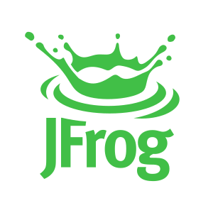
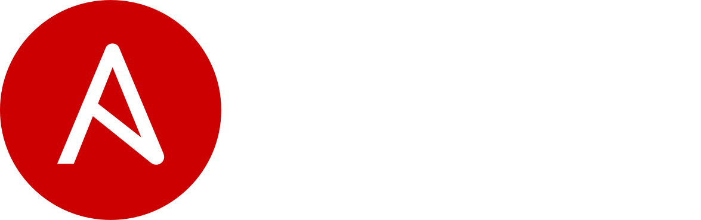
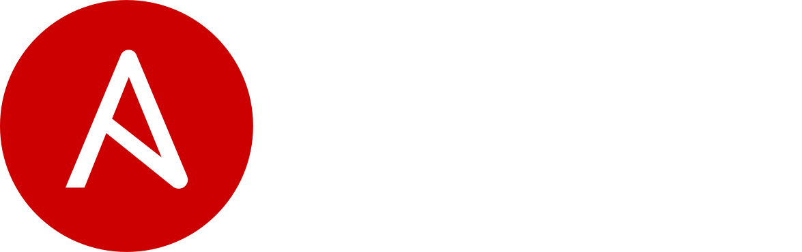

Anil Kumar
I am a highly proficient Technologist with over 7.8+ years commercial experience in designing (Cloud & On-Prem), building and managing global DevOps projects for major blue-chip clients.
Excellent architecture, management, technical skills and experience using various tools, technologies, and techniques.
Exemplary skills and capabilities in designing and delivering Enterprise-wide DevOps & Container orchestration Programmes using agile software development programmes and initiatives, with experience driving the adoption of new technology capabilities at the enterprise level.
Pioneer in Designing CI/CD DevOps practices and engineering native cloud applications.
Having hands on experience in Deploying CI/CD Systems(Jenkins, Bamboo), Binary management(Artifactory, Nexus) and ALM Tools(Jira,Confluence, Bitbucket) and etc.
Possess impeccable written, verbal communication skills, excellent interpersonal skills, Outstanding management and problem-solving skills.
Experience
Senior Consultant - DevOps
* Designed created and delivered a multi-cloud native container DevOps (PAAS)
platform for application development and deployment resulting in the
streamlining of application delivery for the enterprise. The platform uses Docker
as the container technology and deployed onto Kubernetes on AWS and
VMware with a switch that can be used to deploy to either location. The platform
has the end to end CI/CD pipeline, centralized logging and monitoring with
target availability of 99.99%.
* Designed created and delivered an Enterprise Level CI/CD Environment using
Jenkins, Artifactory, SonarQube, and other tools with failover mechanism
achieved using Terraform
* Designed and delivered enterprise-wide CI/CD Pipelines for Spring boot, Java,
Python, Node JS, PHP, and Html applications using Packer and Artifactory
tools.
* Defined delivered and championed the adoption of Enterprise-wide Application
Lifecycle Management Tooling (ALM) based on Jira, Confluence, Bitbucket (Git).
Delivered this to over 8,000 users within IT and the business resulting in
operational efficiency and project delivery transparency including using Jira for
delivering validated (GxP) projects.
* Independently designed and executed company catalog for DevOps support and
development.
* Designed DevOps master page and page layouts, serving as company's main
DevOps support for all technical complications.
* Travelled to Mexico and provided in-person training for global team members &
development teams for seamless development and deployments of enterprise
applications.
*Leading the enterprise Continuous Integration practice. Providing advisory
services in enterprise continuous Integration, Continuous Delivery to key
projects around the organization. Collecting and documenting experiences in the
internal DevOps COE.
Senior DevOps Engineer
* I have been part of the Design & Implementation of the Docker Container's Orchestration Eco System using Hashicorp Nomad and Consul. * Designing & Implemented the fully automated Jenkins Pipeline for automatic Deployment which follows all phases of DevOps lifecycle including Continuous Integration, Continuous Testing, and Continuous Delivery. * Lead Jenkins 2.0 Project, which is focused for Creating Jenkins 2.x Environment & migrating Jenkins Workloads from Jenkins 1.x to 2.X Core. * Designed and implemented a multi-site Artifactory Setup and integrated with existing Nexus Binary management system. * Created and Delivered Jenkins Environment based on Nomad Cluster including dynamic slaves’ creation in Cluster. * Supported the Tomcat Shared Cluster, which was designed to handle multiple tomcat projects with minimum resources. * Support the client development team (mobile app and web app) to build their component to interact with the micro-services. * Maintaining the AWS infrastructure and ensuring the VPC is secured and ensuring that the services are interacting through the private DNS. * Maintain the MongoDB, MySQL DB, and messaging services like RabbitMQ cluster. * Keep learns and does implementation on the latest technologies and train team members. * Designed a monitoring solution using Zabbix, Wavefront, and Sumologic.
DevOps Engineer
* I have been part of the R&D team to find the best CI/CD tool of organization. In R&D I have evaluated various tools such as Jenkins, Bamboo, Thoughtworks GO, UDeploy and other tools. * I am part of the Cloud Smurfs team, where I was primarily worked for designing and delivering internal Cloud (VMware Based Cloud) & Docker Platform for different regions of the organization. * I have designed Pipelines for Projects which has of Continuous Integration, Continuous Testing, Code Quality, and Continuous Deployment Phases. * I have been part of the team which delivered organization-wide discussion forum using Discouse.io * I have been delivered and managed of Continuous Integration, Source Code Management, Binary management Systems. * I have designed and delivered pipeline for integration of Selenium Framework in Jenkins. * I have designed and implemented best Source code branching strategies (Bitbucket and Gitolite) to enable parallel development for multiple releases. * I have been created, administrated, maintained, and troubleshoot the platform incidents. * I have been provided training and support different employees in source control, build automation, merge resolution, CI, test automation. * I have been taken care of backup, restore mirroring of codebase according to policies and standards. * I have been developed, tested and implemented necessary automation scripts. * I have Written, distributed, and maintained the required technical documents according to policies and standards.
Software Engineer
* Prepared SCM plan and implementing the SCM Process and policies. * Performing all SCM activities like Branching, Tagging, and Backup/Restore etc. * Managing SCM tools SVN and GIT including installation, configuration & maintenance. * Educated developers/QA on CM tools and Build environment. * Defining project directory structure, configurable items, naming conventions and access privileges in different applications. * I have maintained Jenkins environment which includes Installation, Configuration, Access Control, Job Configuration, plugins installation, and system upgrades also. * Implemented Nightly Builds & Milestone Builds using Jenkins. * Automated whole Build and release cycles for Java web application using Jenkins. * Performed automated deployments using Jenkins. * Debugged compilation and runtime issues in build failures. * Developed and maintained scripts to automate the build, packaging as well as automation of time-consuming, error-prone tasks associated with the build. * Created and maintained Continuous Build Process documentation. * As a build engineer handled all phases of Build activities. * As a release engineer Participated in all phases of Release activities. * As a release engineer ensured completeness of release notes and publish release package communication. * I have configured web-servers and application servers. * I have maintained Middleware Servers. * I have written shell scripts for necessary automation requirements.
Skills
-


- 
-
 

- Containers, Container Orchestration
- Continuous Integration & Continuous Deployment
- DevOps strategies
- Automation
- Platform as a Service
- Agile Development & Scrum
| Expertise Area | Tool Name |
|---|---|
| DevOps Stack | Jenkins, Jenkins Pipelines, Docker, Packer, Terraform, Bamboo, Artifactory, Nexus, Sonarqube |
| Container Orchestration | Nomad, Kubernetes(On-Prem, Kubeadm, Kops, EKS, GCP),Openshift |
| Cloud Technologies | AWS,GCP,Heroku |
| CI/CD | Jenkins,Bamboo |
| Programming Skills | Python(Functional and Procedural Programming) |
| Build Tools | Maven, Gradle |
| Configuration Management | Ansible,Chef |
| Containers/AMI/Images Creation | DockerFile, Packer |
| IaC | Terraform |
| Container Technology | Docker |
| ALM/SCM/DCM | Jira, Rally,Git( Bitbucket, Github, Gitlab), Confluence, gitolite, Gerrit |
| Binary management/Container Registry | Artifactory, Nexus, GitLab, Docker Hub |
| Code Quality | Sonarqube |
| Service Discovery | ETCD, Consul |
| Service Mesh | Istio |
| Container Networking | Contiv, flannel, and calico |
| Scripting | Bash/Shell Scripting |
| OS | Linux, Unix |
| Web Servers/ Application Servers | Nginx, Apache Tomcat,JBoss |
| Logging Solutions | ELK Stack, Zabbix, Sumo Logics, and WaveFront |
Education
Jawaharlal Nehru Technological University - Kakinada
GPA: 6.80
Sri Prathibha Junior College
GPA: 9.13
Certifications & Major Trainings
- Jenkins Certified Engineer
- Safe - Certified Practitioner
- Employee of the month - Aug-2017
- Attended Agile India 2018 Workshop on “Modern days DevOps Practices”.
- ITIL Internal Certified.
- Participated in Machine Learning workshop provided Edureka Corporate training.